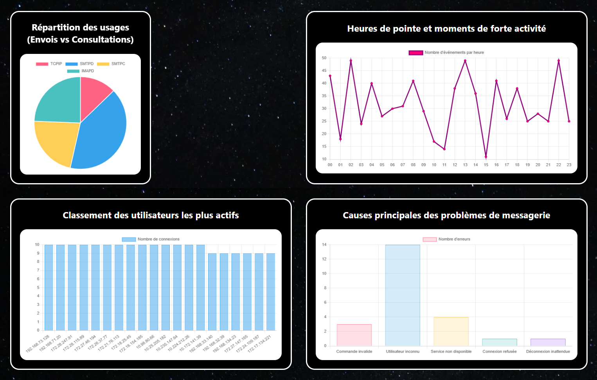

À propos de moi
Bonjour et bienvenue sur mon portfolio ! Je suis Riyad Koukouh.
Actuellement étudiant en BUT Réseaux et Télécommunications à l'IUT de Blois, j'ai un fort attrait pour l'administration système (Linux, Windows), l'infrastructure réseau (TCP/IP, équipements Cisco) et la cybersécurité.
Dans le cadre de ma formation, je recherche activement un contrat d'apprentissage de 24 mois en Systèmes, Réseaux et Cybersécurité, à compter de septembre 2026. Je suis mobile sur le secteur de Blois et d'Orléans.
Autonome, rigoureux et curieux, j'aime m'investir sur le plan technique pour configurer des architectures, sécuriser des services ou assurer l'administration et la maintenance des infrastructures réseaux. J'apprécie particulièrement le travail en équipe et je m'implique pleinement dans les projets qui me sont confiés.
En dehors de l'informatique, je me passionne pour l'astronomie, la photographie et le cinéma.
Mes Compétences Techniques et Savoir-être
Systèmes & Réseaux
- Administration système (Linux, Windows)
- Protocoles réseaux (TCP/IP, IPv4, IPv6, DNS, DHCP)
- Configuration d'équipements Cisco (Switchs, Routeurs)
- Virtualisation, Docker
Développement & Outils
- Python
- Développement logiciel (Java)
- Bases de données SQL (Oracle SQL Developer)
- Développement Web (HTML / CSS / Chart.js / PHP)
- Outils de simulation (Cisco Packet Tracer)
Savoir-être (Soft Skills)
- Autonomie et curiosité technique
- Esprit d'équipe et collaboration
- Proactivité et esprit d'initiative
- Rigueur et sens de l'organisation
Langues
- Anglais technique (Niveau B1)
- Espagnol (Niveau A2)
Mes Projets

PROJET ACADÉMIQUEAnalyse de logs & Dashboard (SAÉ 1.05)
Développement d'un script Python automatisant l'analyse de logs d'un serveur de messagerie et génération d'un tableau de bord dynamique en HTML/CSS avec Chart.js.
 PROJET ACADÉMIQUE
PROJET ACADÉMIQUE
Réseau d'entreprise (SAÉ 2.01)
Conception et déploiement d'une infrastructure réseau complète pour une petite structure : adressage IP, configuration de routeurs et switchs Cisco, services DHCP et DNS.
 PROJET ACADÉMIQUE
PROJET ACADÉMIQUE
Solution informatique pour l'entreprise (SAÉ 2.03)
Conception et déploiement d'une solution applicative répondant aux besoins d'une structure : base de données, développement web et intégration des contraintes de sécurité.
Construire un réseau informatique pour une petite structure
PROJET ACADÉMIQUE
Détails du projet
- Objectif : Concevoir et déployer une infrastructure réseau fonctionnelle pour une petite structure.
- Architecture : Routeurs et switchs Cisco, segmentation en sous-réseaux, services réseau (DHCP, DNS).
- Outils : Cisco Packet Tracer, documentation technique.
Dans le cadre de la SAÉ 2.01, l'objectif était de concevoir une infrastructure réseau complète pour répondre aux besoins d'une petite entreprise. Le projet couvrait l'ensemble des étapes : de l'analyse du cahier des charges à la mise en service des équipements.
J'ai réalisé le plan d'adressage IPv4 avec une segmentation en plusieurs sous-réseaux adaptée à la structure, puis configuré les équipements Cisco (routeur et switchs) pour assurer le routage inter-VLAN et la connectivité entre les différents services.
Les services réseau essentiels ont également été déployés et configurés : un serveur DHCP pour l'attribution automatique des adresses IP et un serveur DNS pour la résolution de noms. L'ensemble a été simulé et validé sur Cisco Packet Tracer avant documentation.
Compétences mobilisées (référentiel BUT R&T)
UE 2.1 — Administrer les réseaux et l'Internet
- Comprendre l'architecture et les fondements des systèmes numériques et des communications
- Configurer les fonctions de base du réseau local
- Maîtriser les rôles et les principes fondamentaux des systèmes d'exploitation afin d'interagir avec ceux-ci
- Identifier les dysfonctionnements du réseau local
- Installer un poste client
Soft skills mobilisés : Rigueur dans la conception du plan d'adressage, méthode dans la résolution des dysfonctionnements rencontrés lors de la simulation, et pleine autonomie dans la gestion globale du déploiement.
Analyse réflexive
Niveau de maîtrise estimé : ?/4 — [À compléter : Mauvais / En cours d'acquisition / Bon / Excellent]
Si c'était à refaire : [À compléter : Quelle a été la plus grosse difficulté sur Cisco/Packet Tracer ? Que ferais-tu différemment avec le recul ?]
Mettre en place une solution informatique pour l'entreprise
PROJET ACADÉMIQUE
Détails du projet
- Objectif : Déployer une solution informatique complète adaptée aux besoins fonctionnels d'une entreprise.
- Architecture : Base de données relationnelle, interface web, scripts de traitement.
- Outils : SQL (Oracle SQL Developer), HTML/CSS/BOOTSTRAP, PHP.
Dans le cadre de la SAÉ 2.03, l'objectif était d'analyser les besoins d'une structure et d'y répondre par une solution informatique cohérente et fonctionnelle, en couvrant l'ensemble du cycle de développement.
J'ai conçu et modélisé une base de données relationnelle adaptée aux besoins spécifiques de l'entreprise, en rédigeant les requêtes SQL nécessaires à la gestion des données (insertions, consultations, mises à jour). La base a été implémentée et testée sous Oracle SQL Developer.
Une interface a ensuite été développée pour permettre l'interaction avec ces données, en intégrant dès la conception les problématiques de sécurité : gestion des accès, validation des entrées et documentation du travail réalisé pour faciliter la maintenance et la prise en main par un tiers.
Compétences mobilisées (référentiel BUT R&T)
UE 2.3 — Créer des outils et applications informatiques pour les R&T
- Utiliser un système informatique et ses outils
- Lire, exécuter, corriger et modifier un programme
- Traduire un algorithme, dans un langage et pour un environnement donné
- Connaître l'architecture et les technologies d'un site Web
- Choisir les mécanismes de gestion de données adaptés au développement de l'outil et argumenter ses choix
- S'intégrer dans un environnement propice au développement et au travail collaboratif
Soft skills mobilisés : Compréhension des besoins (cahier des charges), rigueur dans la modélisation des données, et adaptabilité technique lors du développement.
Analyse réflexive
Niveau de maîtrise estimé : ?/4 — [À compléter : Mauvais / En cours d'acquisition / Bon / Excellent]
Si c'était à refaire : [À compléter : Qu'est-ce qui t'a posé problème entre le SQL, le PHP ou le HTML ? Comment t'y prendrais-tu aujourd'hui ?]
CV & Certifications
Mon Curriculum Vitae
Retrouvez en détail mon parcours académique en BUT R&T, mes compétences techniques ainsi que mes expériences professionnelles.
Consulter mon CV (PDF)Mes Certifications Techniques
En complément de ma formation à l'IUT, je consolide mes acquis grâce à des certifications reconnues par les professionnels du secteur.
-
MOOC SecNumacadémie (ANSSI)
Obtenue en décembre 2025. Validation des bases de la cybersécurité à travers 4 modules : Panorama de la SSI, Sécurité de l'authentification, Sécurité sur internet, et Sécurité du poste de travail et nomadisme.
Voir l'attestation
Contact
Mon profil vous intéresse pour une alternance ? N'hésitez pas à me joindre via ce formulaire ou mes coordonnées directes !
Mes coordonnées directes
- Email : riyadkoukouh45@gmail.com
- Téléphone : 07 52 62 18 65
- Secteur : Blois / Orléans